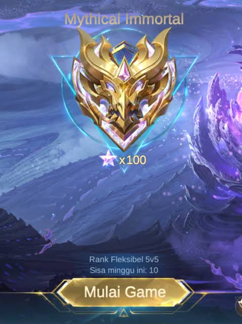

Yang bilang Immo gak ngaruh ke kehidupan itu salah besar. Immo itu ngaruh banget ke hidup gua. Sejak nyampe rank itu, gua jadi lebih disiplin karena harus konsisten main dan improve,
bukan sekadar asal main terus berharap menang. Gua juga jadi lebih fokus, karena tiap game butuh konsentrasi tinggi dan gak bisa asal autopilot. Selain itu, gua belajar ngatur waktu biar bisa
push rank tanpa ngeganggu aktivitas lain, jadi secara gak langsung ngebentuk manajemen waktu yang lebih rapi. Immo juga ngajarin gua kerja sama tim dengan cara yang real. Gak semua orang
bisa diajak main enak, tapi di situ gua belajar adaptasi, komunikasi, dan ngerti peran masing-masing. Ini kepake banget di kehidupan nyata, karena dunia juga gak selalu isi orang yang satu
frekuensi sama kita. Gua jadi lebih sabar dan lebih ngerti cara handle orang yang beda karakter. Dari sisi pengambilan keputusan, gua ngerasa jauh lebih cepat dan tajam. Di game, satu momen
kecil bisa nentuin hasil akhir, jadi gua kebiasa mikir cepat dan tepat di bawah tekanan. Ini kebawa ke kehidupan sehari-hari, dimana gua gak lagi terlalu lama ragu-ragu buat ambil keputusan penting.
Mental juga kebentuk banget. Kalah, ketemu toxic, dihujat, itu udah jadi bagian dari proses. Tapi justru dari situ gua belajar buat tetap tenang, gak gampang ke-trigger, dan tetap fokus ke tujuan.
Jadi kalau ada yang bilang ini gak ngaruh ke kehidupan, menurut gua mereka belum ngerasain sendiri prosesnya. Selain itu, gua jadi lebih kompetitif dalam arti positif. Gua punya dorongan buat
terus improve dan gak cepat puas. Ini bikin gua terbiasa ngejar target dan berusaha lebih baik dari sebelumnya, bukan cuma di game tapi juga di hal lain. Gua juga belajar soal konsistensi. Naik
rank gak bisa instan, harus pelan-pelan tapi stabil. Ini ngajarin gua kalau hasil besar itu butuh proses panjang dan usaha terus-menerus, bukan keberuntungan sesaat. Di sisi lain, gua jadi lebih
ngerti pentingnya evaluasi diri.